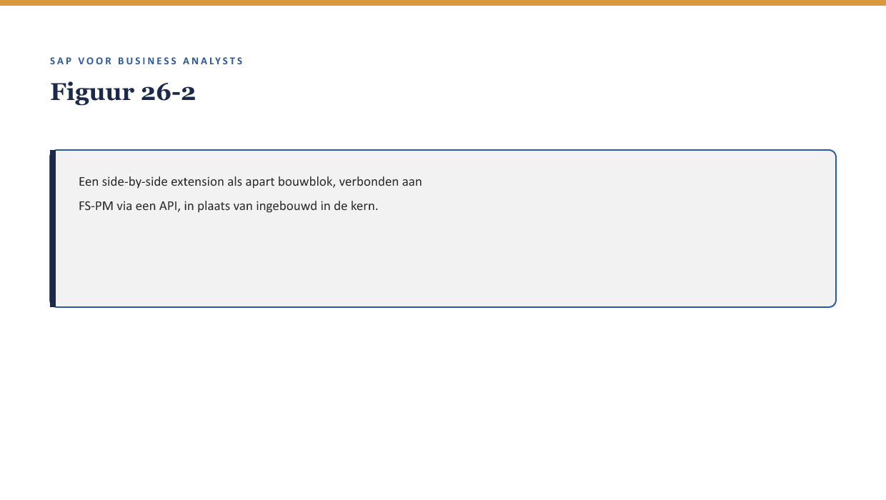

Deel 26 — BTP & extensibility
Slidedeck · Niveau 3 Expert · Cursus SAP voor Business Analysts · Ductus
Slidetypen: titleSlide, sectionSlide, bulletsSlide, statementSlide, quoteSlide, tableSlide, figureSlide, opdrachtSlide.
Slide 1 — titleSlide
BTP & extensibility Deel 26 · Niveau 3 Expert · Cursus SAP voor Business Analysts
Slide 2 — quoteSlide
“Elke uitbreiding die je in de kern bouwt, maakt een toekomstige update lastiger. Er is een andere manier.” — Priya Chandra
Slide 3 — figureSlide

Slide 4 — bulletsSlide
Wat we vandaag doen
- “Keep the core clean” — waarom dit ertoe doet
- Side-by-side extensions en BTP
- Wanneer welke optie?
- De historische kortingsregel, derde keer
Slide 5 — quoteSlide
“Keep the core clean” is de architecturale strategie om de onderhoudslast-zorg uit deel 6 te verkleinen. — Kernzin, reader §3
Slide 6 — figureSlide

Slide 7 — opdrachtSlide
Opdracht 26.1 — Side-by-side of klassiek?
Twee situaties, welke past het beste?
Slide 8 — quoteSlide
Niet alleen “hoeveel bouw je” maar ook “waar draait het.” — Kernzin, reader §5
Slide 9 — statementSlide
De historische kortingsregel.
Custom code (deel 5). BRFplus (deel 12). Side-by-side (nu)?
Slide 10 — opdrachtSlide
Opdracht 26.3 — De kortingsregel, derde keer
Vergelijk alle drie de opties. Welke kiezen jullie?
Slide 11 — bulletsSlide
Samenvatting in vijf zinnen
- “Keep the core clean” houdt het kernsysteem dicht bij standaard
- Side-by-side extensions draaien apart, verbonden via een API
- BTP is het platform waarop zulke extensions doorgaans draaien
- Geschikt voor zelfstandige, moderne functionaliteit — niet voor elke aanpassing
- Een derde dimensie naast de schuifbalk uit deel 6: waar het draait
Slide 12 — titleSlide
Volgende deel IFRS17/FPSL: de samenvatting Deel 27